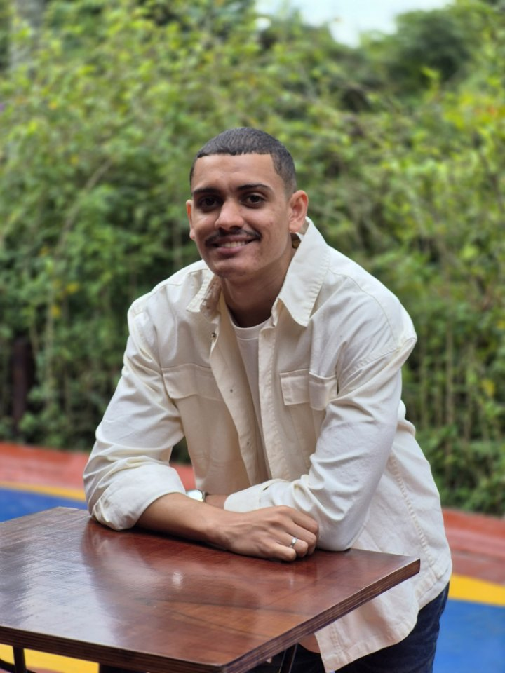
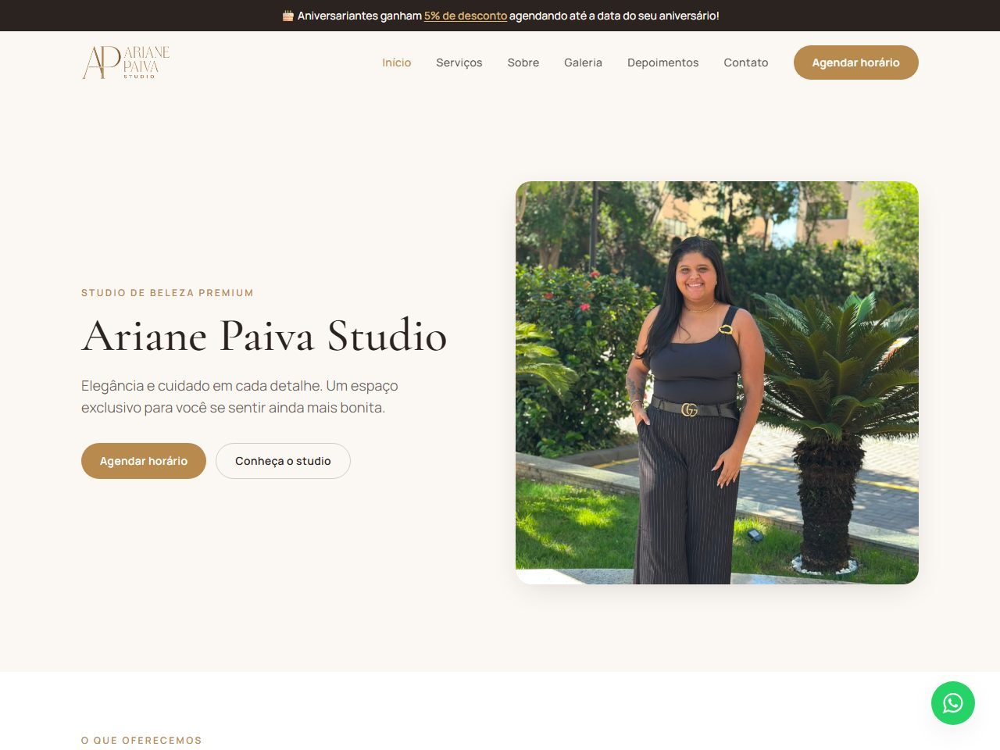

Resolvo o problema onde ele realmente está.
Cinco anos como Analista de Suporte de TI em ambientes corporativos e hospitalares de alta criticidade — hoje também construo, com Python/FastAPI e React/TypeScript, os sistemas que preciso que funcionem sem abrir chamado. SQL, logs e, quando ajuda, IA generativa (Claude Code) fazem parte da rotina de investigação e desenvolvimento.
Do chamado à causa raiz — e ao código que resolve
A mesma disciplina que uso pra investigar um incidente em produção, eu aplico pra construir o sistema.

Depois de anos resolvendo incidentes em ambientes que não podem parar — hospital, cliente corporativo — aprendi que "funcionou aqui" não é resposta. É preciso confirmar a causa raiz, testar de verdade, documentar e só então considerar resolvido.
Apliquei essa mesma disciplina no sistema que construí do zero até produção real: um motor de agendamento para um estúdio de beleza, com autenticação, testes automatizados e documentação completa.
Backend-first
Regras críticas — disponibilidade, permissões, dados sensíveis — são validadas no servidor, nunca só na interface.
Testado de verdade
Testes automatizados fazem parte da definição de "pronto", não uma etapa opcional.
Documentado
Arquitetura, API, autenticação e segurança documentadas — o raciocínio por trás do código, não só o código.
Pronto pra produção
Migrations versionadas, Docker e variáveis de ambiente configuradas — sai do "roda na minha máquina" de verdade.
Ariane Paiva Studio
Site institucional e agendamento online para um estúdio de beleza. Em produção e em uso real.

Site institucional + agendamento online
Sistema completo de presença institucional e agendamento online. Inclui site público, motor de agendamento com verificação real de disponibilidade e painel administrativo completo.
- Fluxo de agendamento em 5 passos, sem necessidade de conta
- Disponibilidade calculada no backend (horário, bloqueios, agendamentos existentes)
- Painel admin: agenda, clientes, serviços, galeria e depoimentos